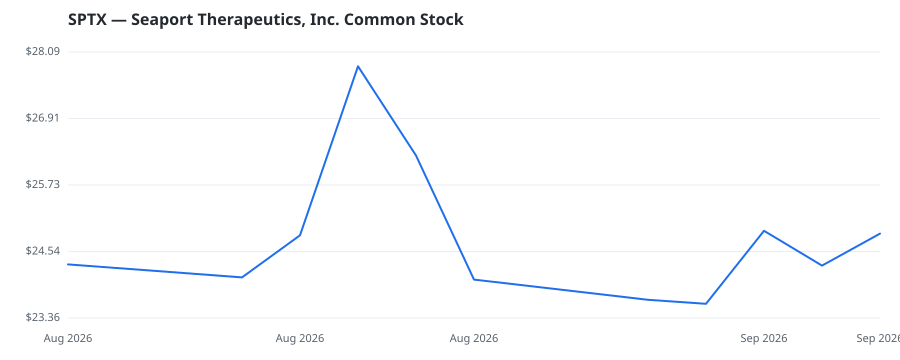

bullish · bearish · n/a — dots: price>SMA10 · SMA10>SMA50 · SMA50>SMA200 · up>down volume (20d)
Pharmaceuticals & Biotech · small cap

Seaport Therapeutics Inc is a clinical-stage therapeutics company. The company focuses on invention and development of new medicines for patients with depression, anxiety, and other debilitating neuropsychiatric disorders. The company identified clinically validated mechanisms with established efficacy and safety profiles, historically limited by high first-pass metabolism, low bioavailability, and side effects. The company's pipeline products are based on Glyph, company's lymphatic-targeting prodrug technology is designed to bypass first-pass metabolism and thereby enhance a drug's oral bioav PHARMACEUTICAL PREPARATIONS · website
This name produced 0.0% of the ranked funds’ total alpha.
🛒 Newly buying: ARCH Venture Management, LLC (+50%, 12.4% of book)
| Fund | Fund alpha vs SPY | Position | % of book |
|---|---|---|---|
| ARCH Venture Management, LLC | +50% | $137M | 12.4% |
Hedge data: SEC EDGAR 13F · ranked funds beat SPY in >50% of their quarters · fund alpha = mirror-portfolio return minus SPY.